В блоке "Геометрия" находятся все свойства связанные с геометрией элемента, таких как: высота, ширина, отступы, выравнивание элемента.
Блок "Геометрия" находится в вкладке "Стиль"
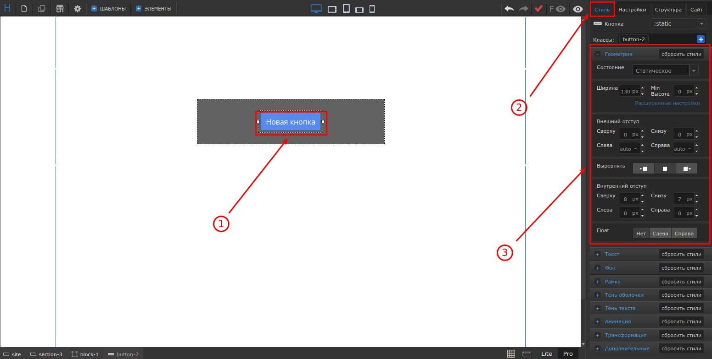
Доступные единицы измерения: px, %, vh, vw, auto. Для того, чтобы изменить единицу измерения, нажмите на нее и у вас появится список доступных единиц измерения, после этого выберите нужное значение
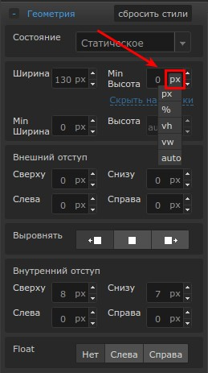
Свернуть/развернуть блок: Нажмите на название этого блока
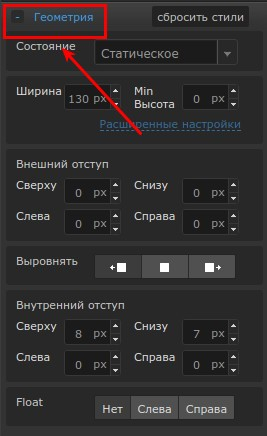
Сбросить все настройки: Нажмите на кнопку "Сбросить стили"
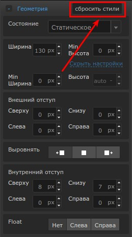
Расширенные настройки: Для того, чтобы показать расширенные настройки, нажмите на кнопку "Расширенные настройки"
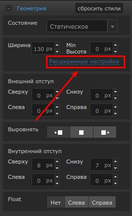
Состояние: Состояние бывает трех видов, статическое, абсолютное и фиксированное.
Статическое - элементы выводятся на экран один за другим в том порядке, как они идут в HTML.
Абсолютное - расположение элемента задается относительно краев его родителя (элемента), внутри которого он находится.
Если выбрать состояние абсолютное, то открываются дополнительные поля
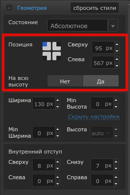
Поле "Позиция" указывает, относительно какого края позиционируется этот элемент.
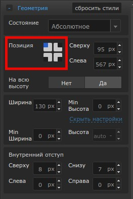
А, два поля справа задают отступы от этого края.
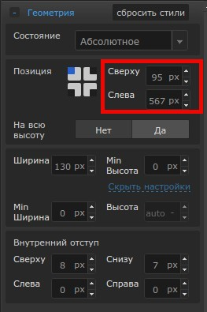
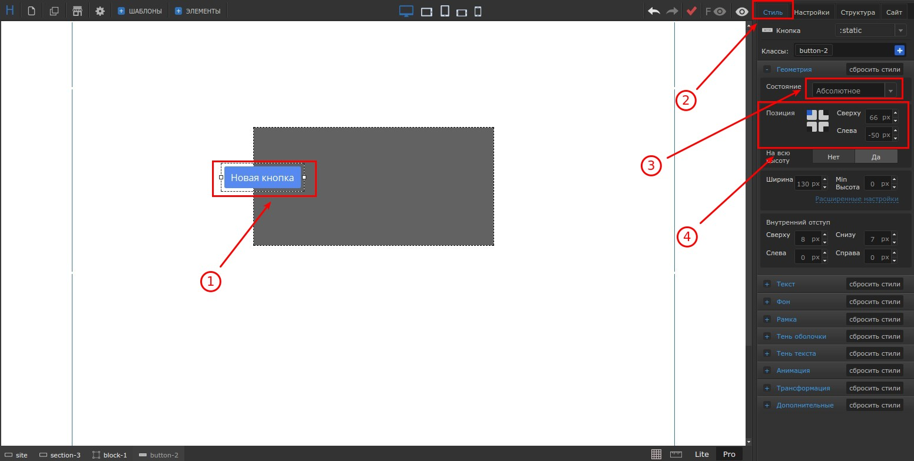
Поле "На всю высоту" растягивает элемент на всю высоту его родителя.
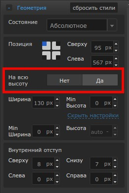
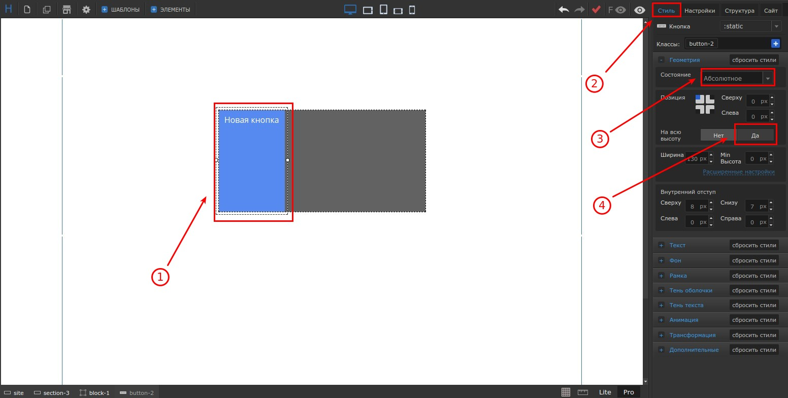
Фиксированное - это, когда элемент будет всегда зафиксирован на этой позиции. Настройки такие же, как и у состояния абсолютное.
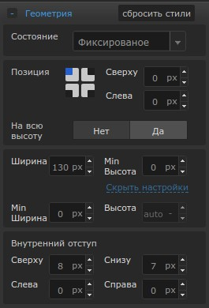
Размеры: Здесь вы можете изменять размеры элемента, такие как: "Ширина", "Min ширина", "Высота", "Min высота".
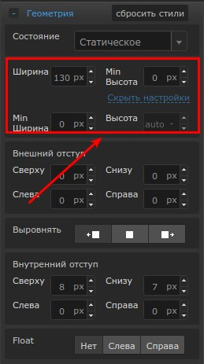
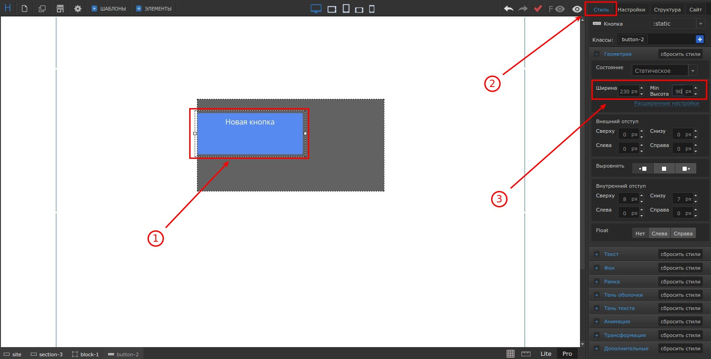
Внешний отступ: Здесь вы можете изменять значения "Внешнего отступа" элемента.
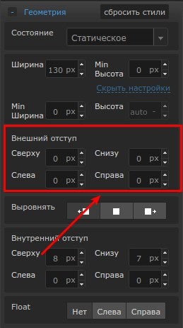
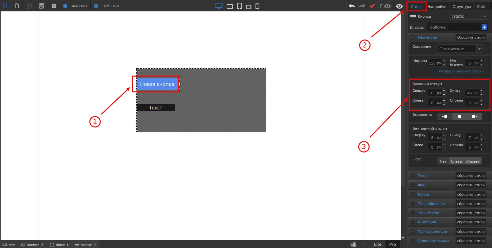
Выравнивание: Выравнивать элементы можно, как при помощи мышки, так же и при помощи кнопок. Здесь находится три кнопки: выравнивание слева, по центру и справа
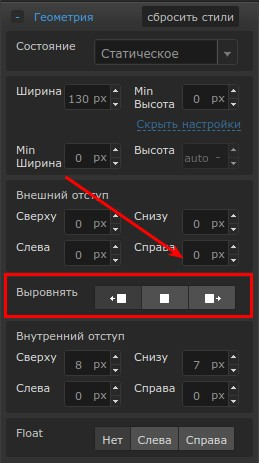
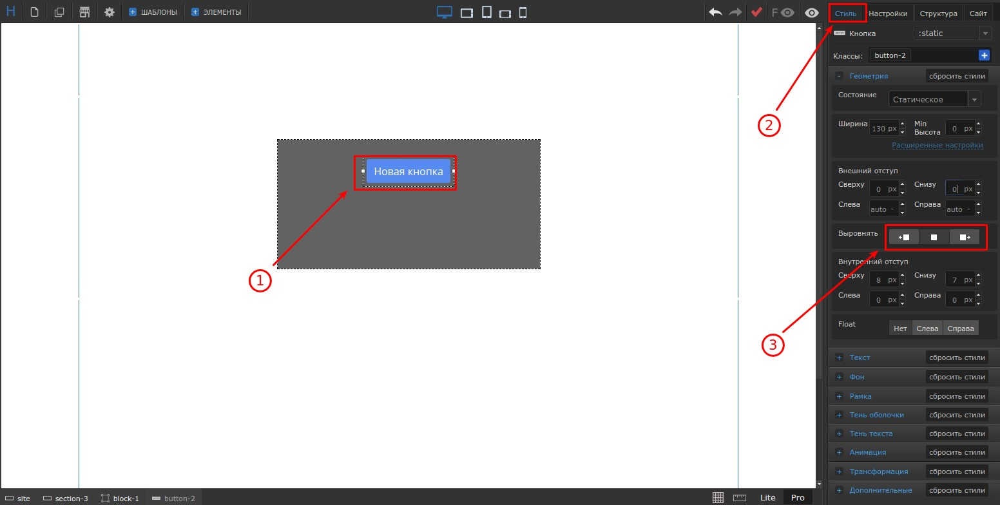
Внутренний отступ: Здесь вы можете изменять значения "Внутреннего отступа" элемента.
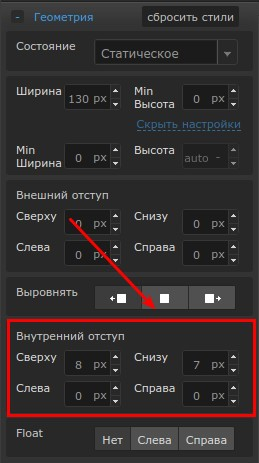
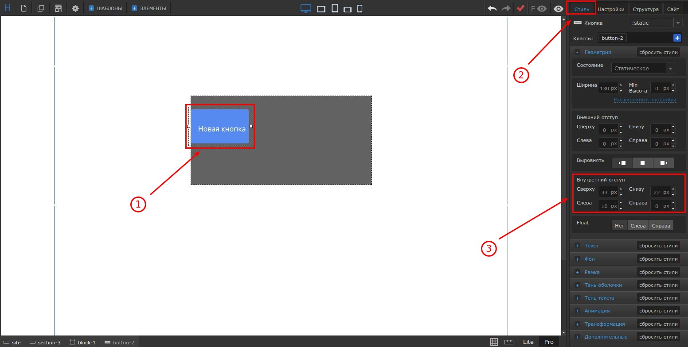
Float: Когда элемент будет находиться внутри элемента "Блок", тогда у него появится дополнительное поле "float" позволяющее выставлять внутри блока элементы горизонтально, а не вертикально. Подробнее
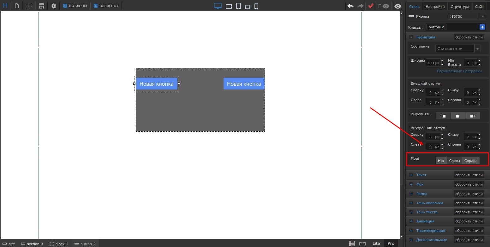